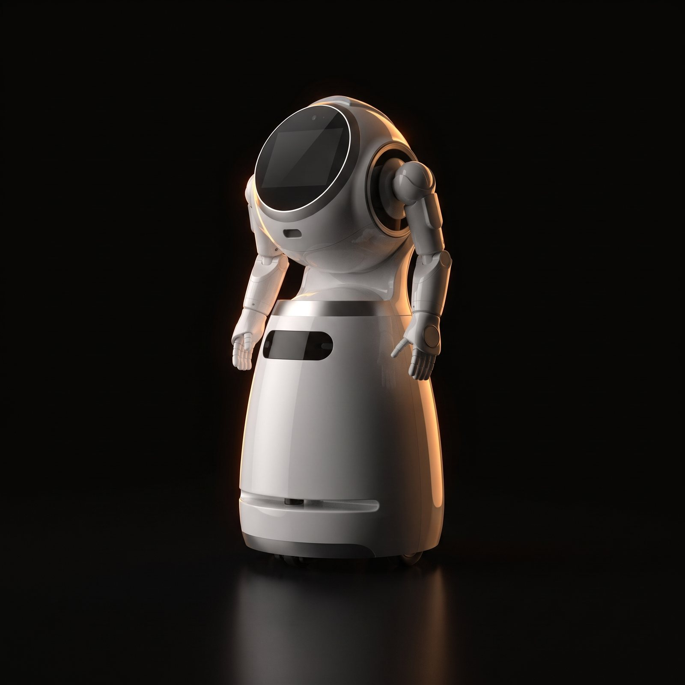
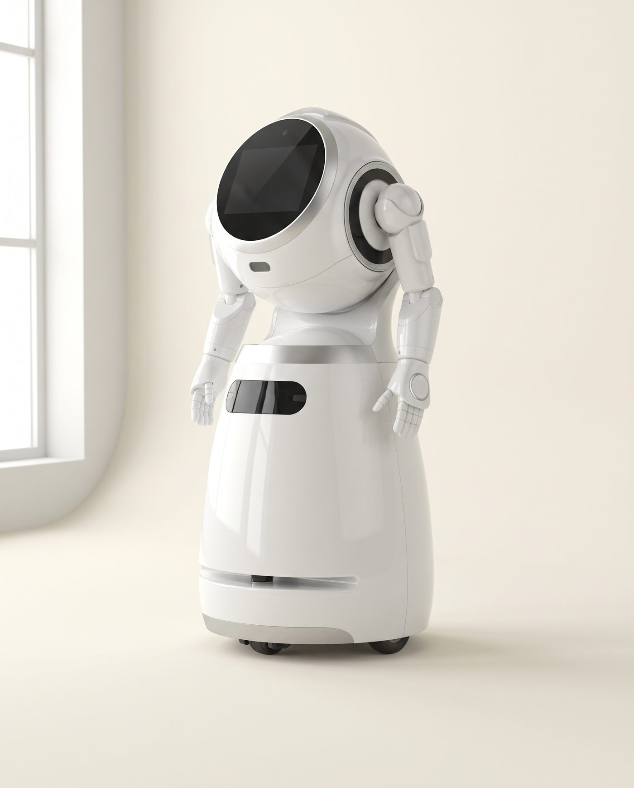

UBTECH Cruzr 1S

The reception robot. Greets, guides, plays your content and comes back to charge.
Cruzr isn't a research platform; it's a front-of-house service robot for structured indoor spaces where a robot greets people, guides them on a route, shows content and does the repeatable part of reception without a hand on the controls. Ours works the door at 365 St Pauls Terrace.

- 11.6-inch touchscreen
HD, front and centre
- U-SLAM navigation
Dynamic obstacle avoidance
- Guided tours
Waypoints and routes
- Multilingual voice
Greets, answers, guides
- 650 mm aisles
15 mm obstacles, 8° climb
- 8 hours working
24 hours on standby
- Charges itself
Automatic return to dock
- Content playback
Promotions on the screen
What it does
- Reception and guest interaction
Voice, touchscreen, multilingual greeting and routine questions in lobbies, clinics, counters and foyers.
- Guided tours and wayfinding
U-SLAM navigation, waypoint tours and route guidance for museums, showrooms, exhibitions and visitor facilities.
- Content and service workflows
Media playback, patrol support and IoT linkage inside a defined indoor service model.
- Hospitality and reception
Hotels, clinics and front-of-house environments where greeting, queue support and guidance are the service.
- Guided tours and public venues
Museums, showrooms, exhibitions and civic halls. For tray delivery in the same venue, see CadeBot.
- Retail promotion
Campaign playback and visitor engagement in stores and activations.
- Public service
Administrative halls and counters where reception and routine information are the job.
Add these to complete the job
Published specification
What is it for?
Front-of-house: reception, guest interaction, guided tours and public information. Not open-ended robotics research.
Where does it work?
Structured indoor spaces: lobbies, clinics, showrooms, exhibitions, reception areas. We review route width, floors and workflow first.
Tours and promotional content?
Yes: guided tours, route guidance, advertising playback and visitor interaction are its core uses.
Does it charge itself?
Yes, automatic return to charge, which is what makes all-day venue deployment workable.